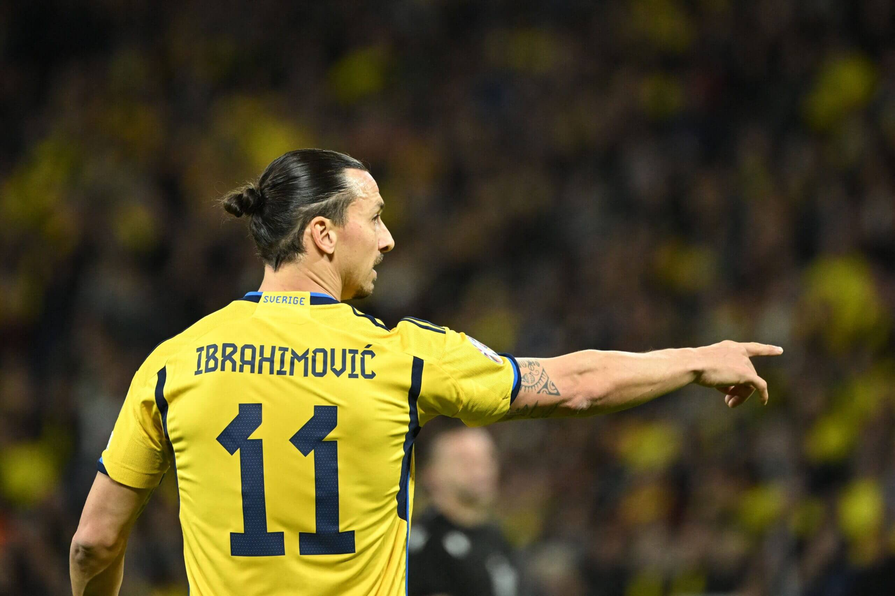
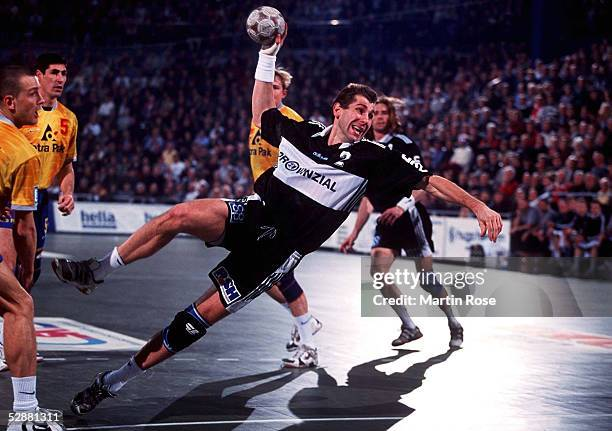
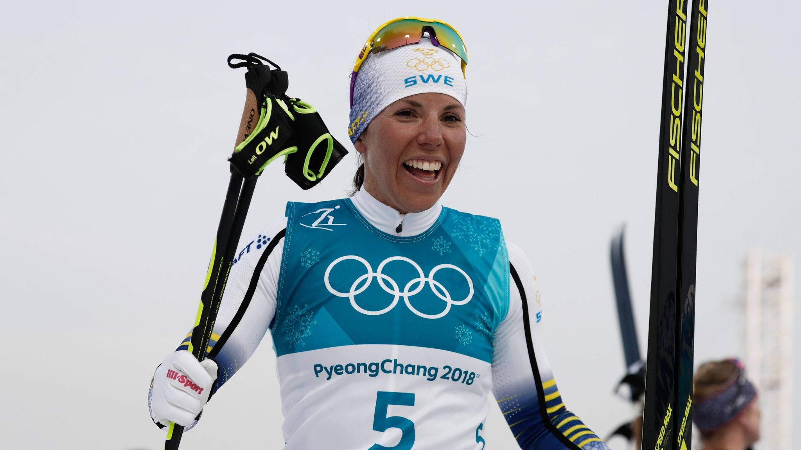
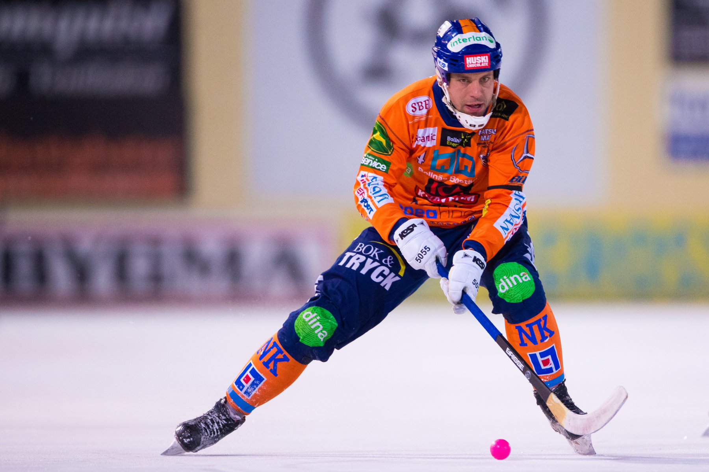

“Sports That Define Sweden”
Sweden is internationally recognized as a strong sporting nation, with success across both team and individual sports.
Ice Hockey
One of the country’s most iconic sports is ice hockey, which is often considered Sweden’s national sport. The Swedish men’s national team, known as Tre Kronor, is consistently among the world’s best, winning medals at World Championships and Olympic Games. Sweden’s strong youth development system has produced many NHL stars, including Nicklas Lidström, widely regarded as one of the greatest defensemen in ice hockey history.

Football (soccer)
Football (soccer) is the most played and followed sport in Sweden. The country has a long tradition of competing at major international tournaments, and both the men’s and women’s national teams are highly respected. Swedish players frequently succeed in top European leagues, and no player represents Swedish football more globally than Zlatan Ibrahimović, whose career, personality, and spectacular goals made him an international icon.

Handball
Another sport deeply rooted in Swedish sporting culture is handball. Sweden has been one of the most successful nations in the sport, winning multiple World and European Championship titles. Handball is especially popular in schools and clubs, and Sweden has played a major role in shaping the modern game. One of its greatest legends is Magnus Wislander, often considered one of the best handball players of all time.

Skiing
Winter sports are central to Sweden’s identity, particularly cross-country skiing and biathlon. These disciplines reflect the country’s climate and connection to nature, and Sweden regularly excels in World Cups, World Championships, and the Olympic Games. A standout athlete in this area is Charlotte Kalla, an Olympic and World Champion whose achievements made her one of Sweden’s most celebrated winter sports figures.

Athletics
In athletics, Sweden has a strong tradition, especially in field events and endurance disciplines. In recent years, the country has gained global attention through Armand “Mondo” Duplantis, the world-record-holding pole vaulter and Olympic champion, who is considered one of the biggest stars in modern track and field.
Swimming
Swimming is an important sport in Sweden, strongly supported by school programs and sports clubs. The country has achieved international success in this discipline, especially thanks to Sarah Sjöström, one of the most successful female swimmers in history. Her Olympic and World Championship medals have inspired many young swimmers in Sweden..

Bandy
Bandy is a traditional Swedish winter sport played on ice with a ball and curved sticks on a large field. It has deep cultural roots in Sweden, especially in central and northern regions. One of the most famous players is Per Hellmyrs, who is considered one of the greatest bandy players of all time. Playing mainly for Sandvikens AIK and the Swedish national team, he won several World Championships and became known for his leadership, technical skill, and goal-scoring ability. His career helped strengthen Sweden’s dominance in international bandy.
